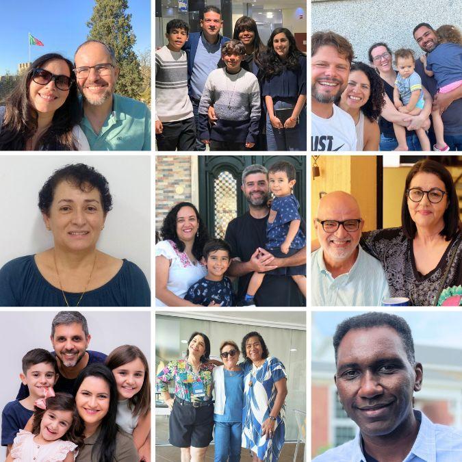

(05) Envolva-se
Faça parte

Sua missão, nossa estrutura.
Qualquer missionário, de qualquer agência, pode contratar uma área da SEPAL. Você continua ligado à sua organização e conta com a experiência de mais de 60 anos da SEPAL no suporte a missionários.
Quero contratar uma área{{ a.n }}{{ a.t }}
(06) Conteúdo